Fiches Culture générale – 6e année
475 fiches Culture générale pour le niveau 6e année, prêtes à imprimer : L'humain et la nature, Döbel, Étudiant, Éthique et bien d'autres. Chaque fiche indique le niveau, le nombre de pages et un aperçu, avec un lien direct vers TpT.
475 ressources
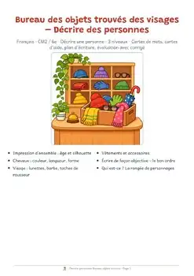
Décrire une personne : le bureau des objets trouvés, CM2–6e
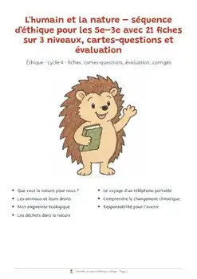
L'humain et la nature – séquence d'éthique 5e–3e : 21 fiches sur 3 niveaux
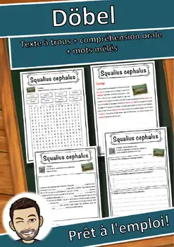
Döbel – Fiche de lecture : texte à trous, compréhension orale et mots mêlés
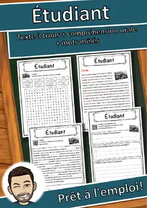
Étudiant – Fiche de lecture : texte à trous, compréhension orale et mots mêlés
Éthique – Fiche de lecture : texte à trous, compréhension orale et mots mêlés
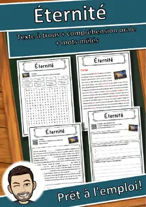
Éternité – Fiche de lecture : texte à trous, compréhension orale et mots mêlés
Étain – Fiche de lecture : texte à trous, compréhension orale et mots mêlés
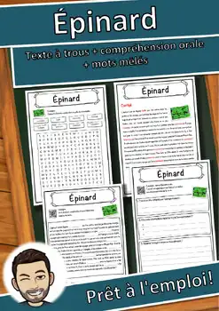
Épinard – Fiche de lecture : texte à trous, compréhension orale et mots mêlés
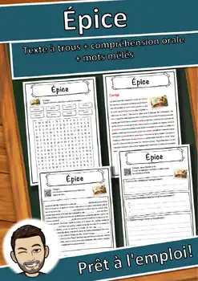
Épice – Fiche de lecture : texte à trous, compréhension orale et mots mêlés
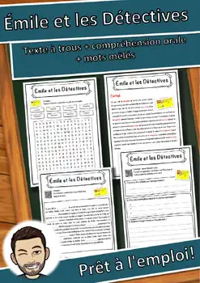
Émile et les Détectives – Fiche texte à trous et compréhension orale
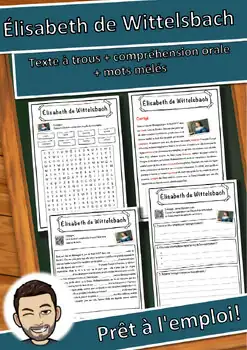
Élisabeth de Wittelsbach – Fiche texte à trous et compréhension orale
Élections fédérales allemandes de 2025 – Fiche de lecture en français
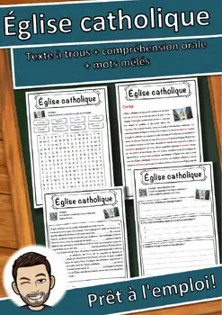
Église catholique – Fiche de lecture : texte à trous et compréhension orale
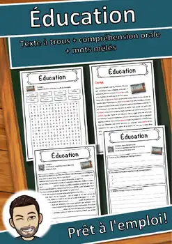
Éducation – Fiche de lecture : texte à trous, compréhension orale et mots mêlés
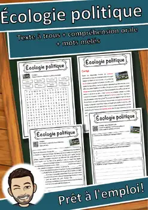
Écologie politique – Fiche de lecture : texte à trous et compréhension orale
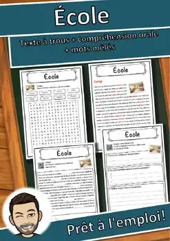
École – Fiche de lecture : texte à trous, compréhension orale et mots mêlés
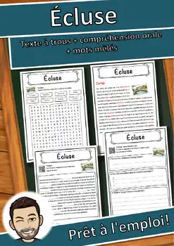
Écluse – Fiche de lecture : texte à trous, compréhension orale et mots mêlés
Écho – Fiche de lecture : texte à trous, compréhension orale et mots mêlés
Échecs – Fiche de lecture : texte à trous, compréhension orale et mots mêlés
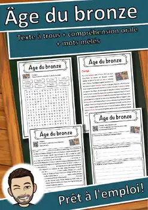
Âge du bronze – Fiche de lecture : texte à trous et compréhension orale
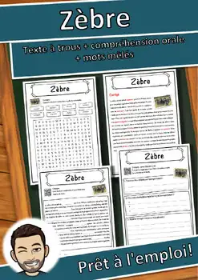
Zèbre – Fiche de lecture : texte à trous, compréhension orale et mots mêlés
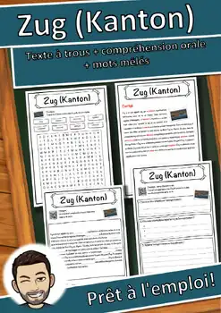
Zug (Kanton) – Fiche de lecture : texte à trous et compréhension orale
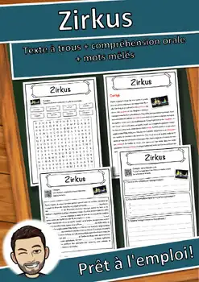
Zirkus – Fiche de lecture : texte à trous, compréhension orale et mots mêlés
Zeugen Jehovas – Fiche de lecture : texte à trous et compréhension orale
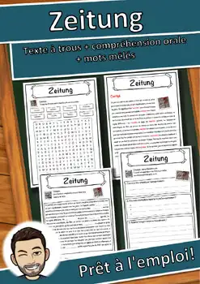
Zeitung – Fiche de lecture : texte à trous, compréhension orale et mots mêlés
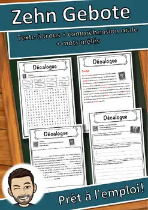
Zehn Gebote – Fiche de lecture : texte à trous et compréhension orale
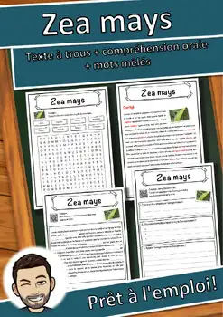
Zea mays – Fiche de lecture : texte à trous, compréhension orale et mots mêlés
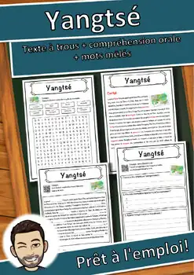
Yangtsé – Fiche de lecture : texte à trous, compréhension orale et mots mêlés
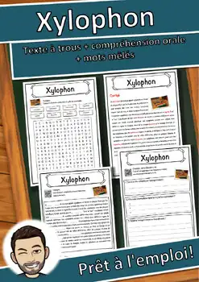
Xylophon – Fiche de lecture : texte à trous, compréhension orale et mots mêlés
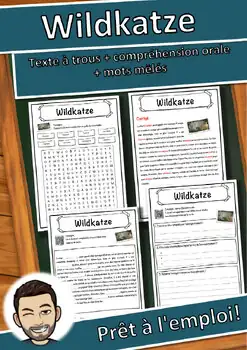
Wildkatze – Fiche de lecture : texte à trous, compréhension orale et mots mêlés
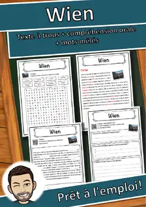
Wien – Fiche de lecture : texte à trous, compréhension orale et mots mêlés
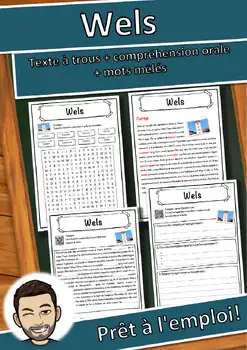
Wels – Fiche de lecture : texte à trous, compréhension orale et mots mêlés
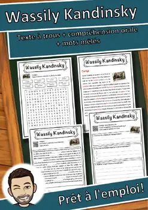
Wassily Kandinsky – Fiche de lecture : texte à trous et compréhension orale
Wasserläufer – Fiche de lecture : texte à trous et compréhension orale
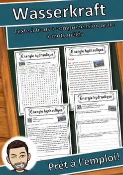
Wasserkraft – Fiche de lecture : texte à trous et compréhension orale
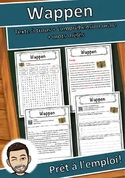
Wappen – Fiche de lecture : texte à trous, compréhension orale et mots mêlés
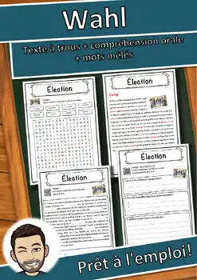
Wahl – Fiche de lecture : texte à trous, compréhension orale et mots mêlés
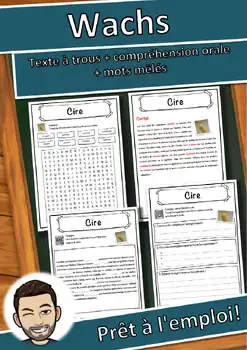
Wachs – Fiche de lecture : texte à trous, compréhension orale et mots mêlés
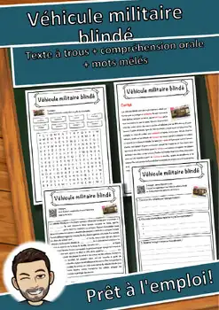
Véhicule militaire blindé – Fiche texte à trous et compréhension orale
Voyance – Fiche de lecture : texte à trous, compréhension orale et mots mêlés
Vol qualifié – Fiche de lecture : texte à trous et compréhension orale
Vladimir Poutine – Fiche de lecture : texte à trous et compréhension orale
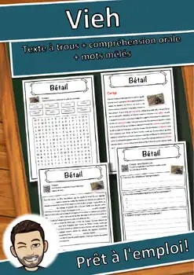
Vieh – Fiche de lecture : texte à trous, compréhension orale et mots mêlés
Vilnius – Fiche de lecture : texte à trous, compréhension orale et mots mêlés
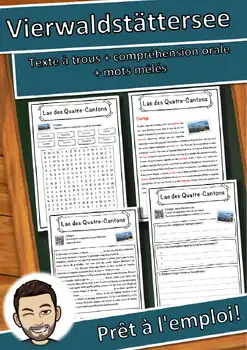
Vierwaldstättersee – Fiche de lecture : texte à trous et compréhension orale
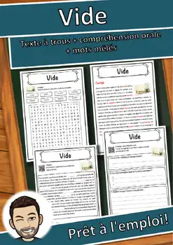
Vide – Fiche de lecture : texte à trous, compréhension orale et mots mêlés
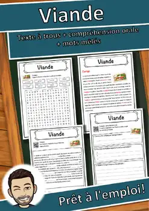
Viande – Fiche de lecture : texte à trous, compréhension orale et mots mêlés
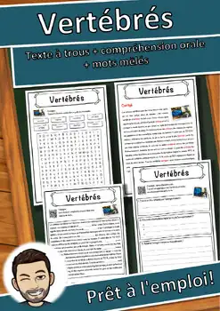
Vertébrés – Fiche de lecture : texte à trous, compréhension orale et mots mêlés
Aucune ressource trouvée – essaie un autre mot ou un autre filtre.